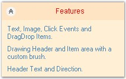
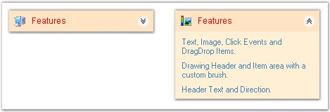
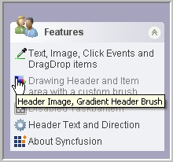

This section discusses the appearance and behavior settings of the XPTaskBar Box.
It includes the below given topics.
This section lists the properties used for customizing the header of the XPTaskBar Box.
The Header of the XPTaskBar Box contains the Collapse button and text. The header text can be changed using the Text property of the XPTaskBar Box. The other properties are discussed below.
|
XPTaskBar Box Property |
Description |
|
HeaderBackColor |
Gets / sets the background color with which the header will be drawn. |
|
HeaderForeColor |
Gets / sets the foreground color with which the header will be drawn. |
|
HeaderDirection |
Gets / sets the header direction. The options are as follows.
· RightToLeft · LeftToRight
The default value is 'LeftToRight'. |
|
HeaderFont |
Gets / sets the text font with which the header will be drawn. |
|
HeaderTextAlign |
Gets / sets the header text alignment. The options are,
· Near · Center · Far
The default value is 'Near'.
The Header text must not be set to Null characters. |
|
ClipHeaderText |
Gets / sets a value indicating whether the header text should be clipped. |
The following screen shot illustrates the above settings.

Figure 941: Header Settings Illustrated
|
[C#]
this.xpTaskBarBox1.HeaderBackColor = System.Drawing.Color.Bisque this.xpTaskBarBox1.HeaderForeColor = System.Drawing.Color.Red; this.xpTaskBarBox1.HeaderDirection = Syncfusion.Windows.Forms.Tools.XPTaskBarBox.HeaderDirectionFormat.RightToLeft; this.xpTaskBarBox1.HeaderFont = new System.Drawing.Font("Arial", 9F, System.Drawing.FontStyle.Regular, System.Drawing.GraphicsUnit.Point, ((System.Byte)(0))); this.xpTaskBarBox1.HeaderTextAlign = System.Drawing.StringAlignment.Center; this.xpTaskBarBox1.ClipHeaderText = true; |
|
[VB.NET]
Me.xpTaskBarBox1.HeaderBackColor = System.Drawing.Color.Bisque Me.xpTaskBarBox1.HeaderForeColor = System.Drawing.Color.Red Me.xpTaskBarBox1.HeaderDirection = Syncfusion.Windows.Forms.Tools.XPTaskBarBox.HeaderDirectionFormat.RightToLeft Me.xpTaskBarBox1.HeaderFont = New System.Drawing.Font("Arial", 9F, System.Drawing.FontStyle.Regular, System.Drawing.GraphicsUnit.Point, (CByte(0))) Me.xpTaskBarBox1.HeaderTextAlign = System.Drawing.StringAlignment.Center Me.xpTaskBarBox1.ClipHeaderText = True |
See Also
This section discusses the button settings of the XPTaskBar Box.
The collapsed button is used to expand or collapse the XPTaskBar Items. The following table lists the properties associated with collapsing or expanding the XPTaskBar Box.
|
XPTaskBar Box Property |
Description |
|
Collapsed |
Specifies the collapsed state of the TaskBar Box. The default value is set to 'False'. |
|
ShowCollapseButton |
Specifies whether to show or hide the collapse button. The default value is set to 'True'. |
|
ToggleByButton |
Specifies whether the XPTaskBar Box should expand or collapse only when the collapse button is clicked, or always when the header is clicked. The default value is set to 'False'. |
|
[C#]
this.xpTaskBarBox1.Collapsed = true; this.xpTaskBarBox1.ShowCollapseButton = true; this.xpTaskBarBox1.ToggleByButton = true; |
|
[VB.NET]
Me.xpTaskBarBox1.Collapsed = True Me.xpTaskBarBox1.ShowCollapseButton = True Me.xpTaskBarBox1.ToggleByButton = True |
Figure 942: Collapsed State of the XPTaskBar Boxes
The methods associated with the above properties are given below.
|
Methods |
Description |
|
LoadBoxExpandedStates |
Loads the expanded child taskbar boxes from the AppStateSerializer |
|
SaveBoxExpandedStates |
Saves the expanded child taskbar boxes to the AppStateSerializer. |
Animation during expanding / collapsing of the Taskbar items in an XPTaskBar can be controlled using the following properties. Animation can also be enabled while adding or removing any TaskBar items.
|
XPTaskBar Box Property |
Description |
|
AnimationDelay |
Specifies the animation delay during expand / collapse of the XPTaskBarBox. |
|
AnimationPositionsCount |
Specifies the number of animation positions during expand / collapse. |
|
UseAdditionalAnimation |
It indicates whether animation is enabled when items are added / removed. |
|
[C#]
this.xpTaskBarBox1.AnimationDelay = 100; this.xpTaskBarBox1.AnimationPositionsCount = 20; this.xpTaskBarBox1.UseAdditionalAnimation = true; |
|
[VB.NET]
Me.xpTaskBarBox1.AnimationDelay = 100 Me.xpTaskBarBox1.AnimationPositionsCount = 20 Me.xpTaskBarBox1.UseAdditionalAnimation = True |

Figure 943: Collapse and Header Image for XPTaskBar
This section discusses the mouse hover settings of the XPTaskBar control.
The position of the mouse with respect to the control can be known using the properties given below.
|
XPTaskBar Box Property |
Description |
|
HitTaskBoxArea |
Specifies whether the mouse is moved over the TaskBox area. |
|
HeaderHit |
Indicates whether the mouse is currently over the header portion. |
|
[C#]
this.xpTaskBarBox1.HitTaskBoxArea= true; this.xpTaskBarBox1.HeaderHit= true; |
|
[VB.NET]
Me.xpTaskBarBox1.HitTaskBoxArea = True Me.xpTaskBarBox1.HeaderHit = True |
To host multiple controls inside the XPTaskBar Boxes, we prefer the Panel control. We can set the panel's height using the PreferredChildPanelHeight property.
|
XPTaskBar Box Property |
Description |
|
PreferredChildPanelHeight |
It sets the height of the panel hosted inside the XPTaskBar Boxes. |
|
[C#]
this.xpTaskBarBox1.PreferredChildPanelHeight = 35; |
|
[VB.NET]
Me.xpTaskBarBox1.PreferredChildPanelHeight = 35 |
Figure 944: PreferredChildPanelHeight = "35"
ToolTips can be provided for the TaskBar Items of the XPTaskBar Box. The interesting part is that tooltips can also be assigned for the disabled TaskBar Items.
The ToolTipText property of the XPTaskBar control can be used to set the text of the tooltip, while the tooltip can be displayed using the ShowToolTip property.
|
XPTaskBar Box Property |
Description |
|
ToolTipText |
Gets / sets the text of the tooltip. |
|
ShowToolTip |
Sets the visibility of the tooltip. The default value is set to 'False'. |
|
[C#]
// Set the tooltip text for the XPTaskBar Item. this.xpTaskBarBox1.Items[1].ToolTipText = "Header Image, Gradient Header Brush"; this.xpTaskBarBox1.ShowToolTip = true; |
|
[VB.NET]
' Set the tooltip text for the XPTaskBar Item. Me.xpTaskBarBox1.Items(1).ToolTipText = "Header Image, Gradient Header Brush" Me.xpTaskBarBox1.ShowToolTip = True |

Figure 945: TaskBar Box displaying ToolTip